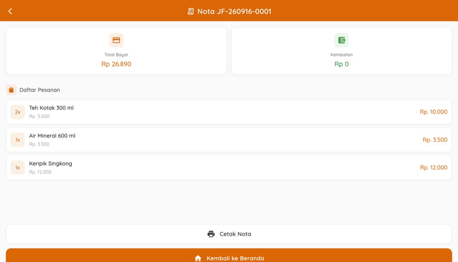
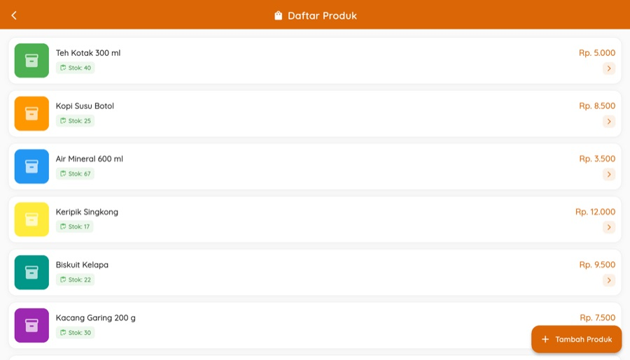
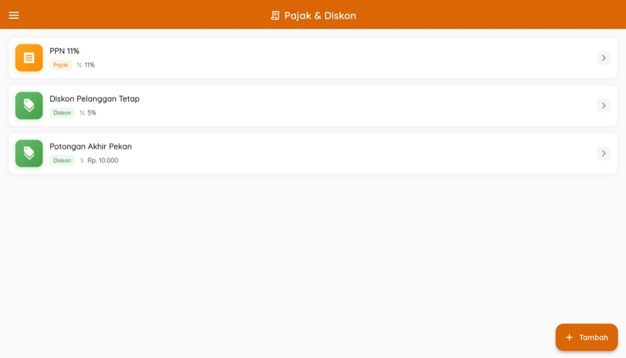
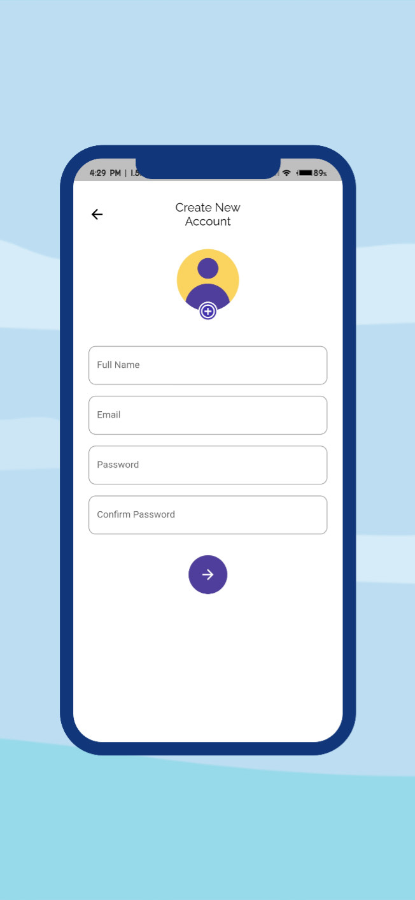
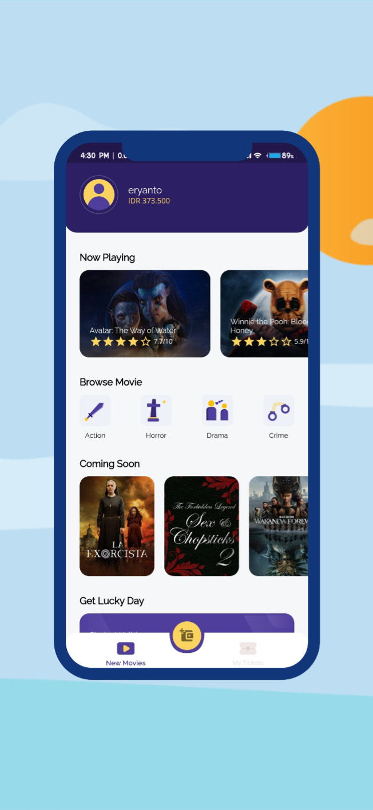
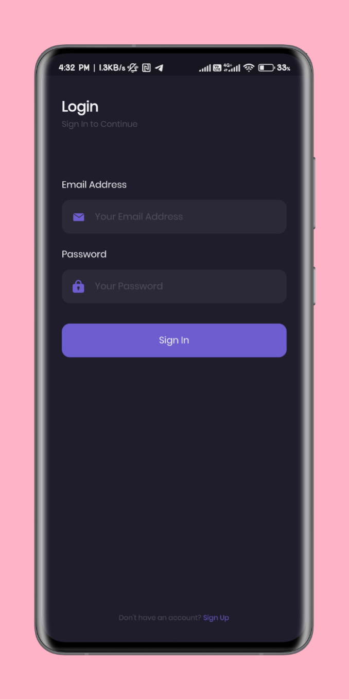
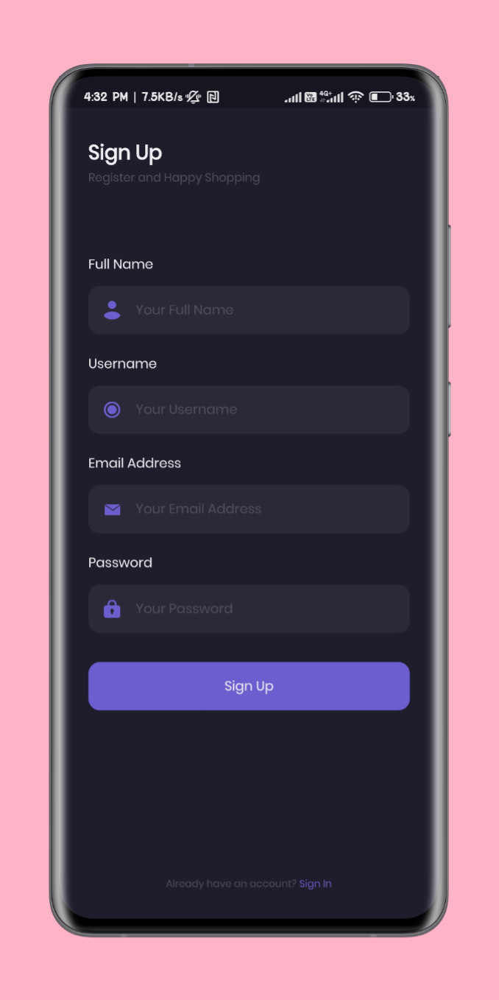

GALERIproject.
Aplikasi yang saya bangun sendiri untuk belajar dan berlatih. Belum ada yang memakainya di dunia nyata — halaman ini murni tangkapan layar dan teknologinya.
UMKM Connect
Kasir untuk usaha mikro: scan barcode, aturan pajak dan diskon, peran staf multi-outlet, dan struk thermal Bluetooth langsung dari HP.
Catatan asal-usul: dikembangkan dari materi kelas.
Catatan data: usaha, menu, staf, dan transaksi pada tangkapan layar adalah data contoh.


Kasir Offline
Kasir retail yang berjalan penuh tanpa internet: katalog, stok, pajak dan diskon, peran staf, laporan penjualan, serta cadangan data ke berkas.
Catatan asal-usul: dikembangkan dari materi kelas.
Catatan data: toko, produk, staf, dan transaksi pada tangkapan layar adalah data contoh.










QR Order
Pelanggan memesan dari meja lewat scan QR, pesanan masuk ke tablet kasir, lalu dibayar dengan QRIS lewat Midtrans.
Catatan asal-usul: dikembangkan dari materi kelas.
Catatan data: menu, meja, dan pesanan pada tangkapan layar adalah data contoh.
Sisi pelanggan — dibuka dari HP


Sisi kasir — tablet


Hadir
Absensi dengan deteksi wajah dan liveness (kedipan mata), geofencing GPS, dan mode scan QR.
Catatan asal-usul: dikembangkan dari materi kelas.
Catatan data: perusahaan, karyawan, dan riwayat absensi pada tangkapan layar adalah data contoh.
Pengenalan wajah dan liveness tidak ditampilkan: emulator tidak punya kamera dengan wajah nyata, dan saya tidak menyalakan kamera laptop untuk itu. Peta juga tidak muncul karena kunci Google Maps di project ini masih kosong.
Dashboard admin


Aplikasi karyawan


Sigap Delivery
Tiga aplikasi dalam satu sistem — pelanggan, restoran, dan driver — dengan pelacakan langsung.
Catatan asal-usul: dikembangkan dari materi kelas.
Catatan data: usaha, menu, dan pesanan pada tangkapan layar adalah data contoh.
Aplikasi driver dan peta pelacakan tidak ditampilkan di sini: keduanya butuh kunci Firebase dan Google Maps milik penyedia kelas, yang tidak saya pakai.
Aplikasi pelanggan


Aplikasi restoran


Café System
Buka/tutup shift, open bill, rekonsiliasi kasir, dan laporan harian yang dikirim otomatis ke email pemilik.
Catatan asal-usul: dikembangkan dari materi kelas.


Food Delivery
Pesan antar makanan: keranjang, checkout, dan pembayaran, dengan panel admin Laravel lewat REST API.
Catatan asal-usul: dibangun mengikuti kelas BuildWithAngga.


Chatting App
Kirim pesan teks dan gambar antar perangkat, memakai struktur koleksi dan dokumen Firebase.
Catatan asal-usul: dibangun mengikuti kelas BuildWithAngga.


Airplane
Pemesanan tiket pesawat: daftar akun, transaksi, dan detail destinasi. Strukturnya saya tulis ulang memakai Clean Architecture dan TDD.
Catatan asal-usul: dibangun mengikuti kelas BuildWithAngga.


Tiket Bioskop
Beli tiket bioskop dari HP, daftar film diambil dari API TheMovieDB, lalu pilih jadwal dan kursi.
Catatan asal-usul: dibangun mengikuti kelas BuildWithAngga.





Furniture Store
Katalog furnitur: alur pembuka dan masuk akun, lalu pencarian, kategori, wishlist, dan pilihan warna produk.
Catatan asal-usul: dibangun mengikuti kelas BuildWithAngga.


Toko Sepatu Online
Toko sepatu dengan API Laravel, chat antara pembeli dan toko, serta alur pembayaran.
Catatan asal-usul: dibangun mengikuti kelas BuildWithAngga.





Doctor Consultation
Janji temu dan konsultasi dokter: kategori dokter, chat, dan informasi rumah sakit terdekat.
Catatan asal-usul: dibangun mengikuti kelas BuildWithAngga.